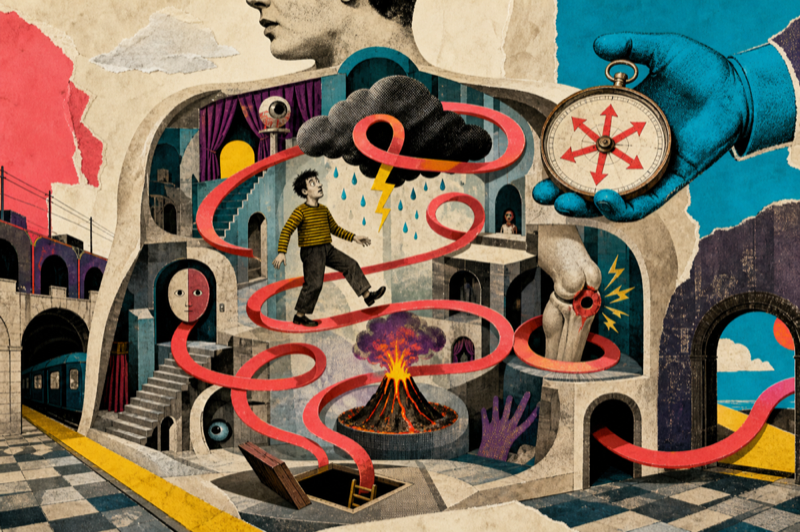
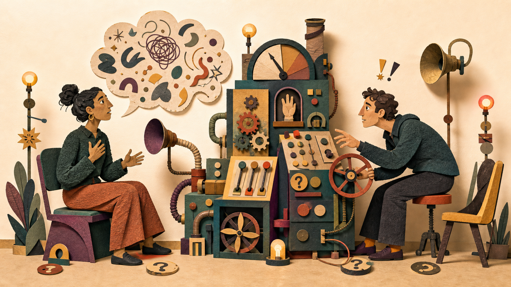

Kort & licht
JE BENT BINNEN.WAS DAT DE BEDOELING?
Hier spelen we met je aandacht, je attitude, je automatische antwoorden en de rollen waarin je verdwijnt.
Soms speelt er eentje terug.
Vijf keurige kaders. Wat kan er misgaan?
PLAYERJIJ
SPOORGASTMODUS
SPELREGELGEEN DIAGNOSE
LAATSTE WOORDVAN JOU
Dada-arcade voor het menselijk binnenwerk
Waar heb jij
nu goesting in?
Je hoeft geen spel te kennen. Bedien één verdachte machine en de Speelhal wijst iets aan. Je krijgt altijd eerst te zien wat ze gekozen heeft.
Iets onderzoeken
Zet het verdachte licht aan.
Ik wil zien hoe ik reageer of welk patroon in mijn antwoorden terugkomt.Iets echt meenemen
Voer de machine één echt moment.
Ik heb een situatie, probleem of gewoonte waar ik mee wil werken.Verras me
Ik weiger een goede reden te hebben.
Laat de machine iets aanwijzen. Onverantwoord, maar wel efficiënt.TOEVAL
HEEFT
GESPROKEN
HEEFT
GESPROKEN

Vers uit het achterkamertje
NIEUW SPEL · WERKBANK · 15–20 MINUTENSpoel even terug.
Leg één ongemakkelijk moment op de montagetafel. Niet om de enige juiste verklaring te vinden, wel om gebeurtenis, ondertiteling, lichaam, emotie en impuls even uit elkaar te halen.
Leg mijn scène op de snijtafel →Kan je niet kiezen?
Kies dan zelf.
Open een familielade, zoek op een woord of laat alles tegelijk knipperen. De vorm zegt wat je gaat dóén; het onderwerp zegt waarover.
Deze combinatie zit niet in de kast. Draai één filter terug of probeer een ander woord.

Gesprekssimulatie · ongeveer 12–15 minuten
- Zes gesprekken, telkens twee beurten.
- Een eerste reactie mag later worden hersteld.
- Bij acuut gevaar gelden andere prioriteiten.
Druk om te beginnenGeen persoonlijkheidstest. Wel een oefening in afstemmen, handelen, verantwoordelijkheid en grenzen.
Stuurtafel · ongeveer 7 minuten
Kijk naar je probleem vóór je erin verdwijnt.
Bij een lastig gesprek, probleem of keuze klinkt er zelden maar één heldere gedachte. Een deel wil snel handelen. Een ander houdt rekening met iedereen. Nog een deel verwacht gevaar. En ergens probeert ook iets te onthouden wat jij belangrijk vindt.
Als dat allemaal tegelijk spreekt, voelt de luidste reactie al snel als de enige waarheid. Deze oefening haalt die reacties tijdelijk uit elkaar. Niet om de “echte jij” te vinden, maar om ruimte te maken tussen wat er gebeurt, wat er in je opkomt en wat je uiteindelijk wilt doen.
Wat is de Stuurtafel écht?
Een korte schrijfoefening in perspectief nemen. Je onderzoekt één concrete situatie, bekijkt haar vanuit vier nuttige hoeken en beslist daarna welke reactie automatisch rijdt en welke informatie jij bewust wilt meenemen.
Een stoel afstand
Experimenten suggereren dat spreken over jezelf vanop afstand kan helpen om een persoonlijk conflict wijzer en minder bedreigend te bekijken.
Bekijk het onderzoek ↗Een zin is geen bevel
Bij cognitieve defusie oefen je om een gedachte als mentale gebeurtenis op te merken, zonder haar meteen te bestrijden of uit te voeren.
Bekijk de meta-analyse ↗Posities zichtbaar maken
Stoelwerk gebruikt fysieke posities om innerlijke spanning bespreekbaar te maken. Deze online versie leent alleen de metafoor; ze is geen therapie.
Bekijk de meta-analyse ↗Zo werkt de oefening
- Kies één moment.Niet “mijn hele relatie”, wel “morgen moet ik zeggen dat ik die extra taak niet overneem”.
- Beantwoord vier vragen.Wat wil je meteen doen? Met wie houd je rekening? Waarvoor ben je bang? Wat vind je belangrijk?
- Geef iedere zin een stoel.Bestuurder = automatische reactie. Copiloot = informatie die je bewust wilt gebruiken. Achterbank = aanwezig, niet beslissend.
- Bekijk het van buitenaf.Je spiegel toont de hele wagen en helpt je één kleine, haalbare volgende stap formuleren.
Drie mogelijke vertrekpunten
Klein en concreet werkt beter.
Je hoeft nog niets op te lossen. Kies alleen een scène die je in één of twee zinnen kunt beschrijven.
Jij schrijft de zinnen.
De vier namen zijn alleen opstapjes en mogen volledig worden herschreven. Zet je geluid aan voor de volledige, volstrekt onverantwoorde rijervaring.
Een geldig antwoord. Deze vraag telt dan niet mee.
Kies wat vandaag het dichtst in de buurt komt.
Geen stille winnaar
Meer dan één spiegel past even sterk.
Je kiest geen definitief type. Je kiest alleen welke mogelijke lezing je nu wilt onderzoeken.De spiegel · van buiten naar binnen
Stap even uit. Kijk naar de hele wagen.
Afstand nemen betekent niet dat je probleem onbelangrijk is. Je maakt alleen ruimte tussen wat er gebeurt, wat een stem roept en wat jij vervolgens kiest.
Welke informatie van je copiloot wil je werkelijk gebruiken?
Zou je dezelfde bestuurder kiezen als deze rit van een goede vriend was?
Welke kleine stap past bij je kompas én bij wat werkelijk haalbaar is?
Terugblik op zes gesprekken
Geen oordeel. Wel bewegingen die per situatie verschilden.
De simulatie kijkt naar wat je hier koos en hoe je daarna bijstuurde. Dezelfde reactie kan in een andere relatie of urgentie anders uitpakken.
Bewegingen die hielpen afstemmen
Bewegingen die onder druk sterker werden
Wat hier nog niet uit blijkt
Wat veranderde er na jouw woorden?
Optionele praktijkproef · Vraag vóór je helpt
- Vat in één zin samen wat je denkt gehoord te hebben.
- Vraag: “Wil je dat ik luister, vragen stel, meedenk of praktisch help?”
- Volg die keuze enkele minuten zonder ongemerkt van rol te wisselen.
- Vraag achteraf: “Was dit helpend, of had je iets anders nodig?”
Soms weet iemand het nog niet. Bied dan twee concrete mogelijkheden aan. Kies een veilig gesprek; deze vier stappen zijn een praktische vertaling, geen bewezen behandeling.
“Ik kan even luisteren, of we kunnen samen kijken wat je morgen als eerste kunt doen. Wat helpt nu het meest?”
Grensvariant: “Ik wil er voor je zijn, maar ik heb nu niet genoeg ruimte om goed te luisteren. Kunnen we een ander moment kiezen of iemand zoeken die nu wel kan helpen?”
Waarop is dit gebaseerd?
Op onderzoek naar ervaren responsiviteit, verschillende vormen van sociale steun, autonomie-ondersteuning, motiverende gespreksvoering, psychologische veiligheid en crisisrichtlijnen. Dit spel is zelf niet gevalideerd.
Een vraag die mag tegenspreken
Jij hebt het laatste woord
Hoe goed past deze spiegel?
Kies eerst hoe goed de spiegel past. Je eigen aanvulling mag leeg blijven.
Klein experiment
Dit profiel zegt niet wie je bent. Het laat zien welke patronen in jouw antwoorden vandaag het sterkst naar voren kwamen. Gebruik het als uitnodiging tot onderzoek, niet als diagnose of definitief oordeel.
HANDLEIDINGvoor mogelijk onbetrouwbare machines
Lees dit vóór of na het indrukken
De machine mag zich vergissen.
- 01Geen diagnose. Geen enkel spel berekent objectief wie jij bent.
- 02Geen uitslag heeft het laatste woord. Dat blijf jij houden.
- 03Een vraag mag je situatie missen. Context is geen foutmelding.
- 04Je tegenspraak hoort bij het resultaat. Ook “dit klopt niet” is informatie.
Uitgang · waarschijnlijk
Genoeg gespeeld met je binnenkant?
In Mijn spoor wordt het stil. Daar vind je terug wat je las, speelde, bewaarde of nog niet afmaakte.
Bewaar mijn buit in Mijn spoor →Ik verdwijn zonder fanfare